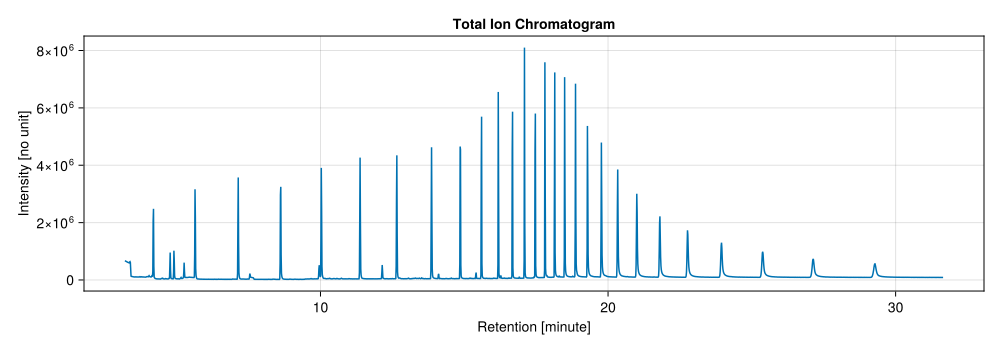
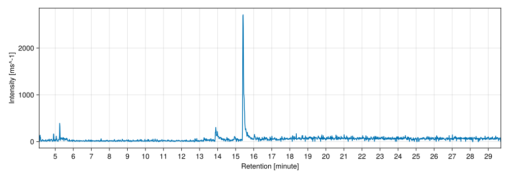
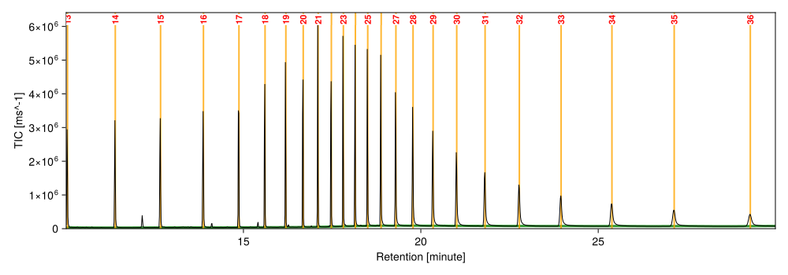
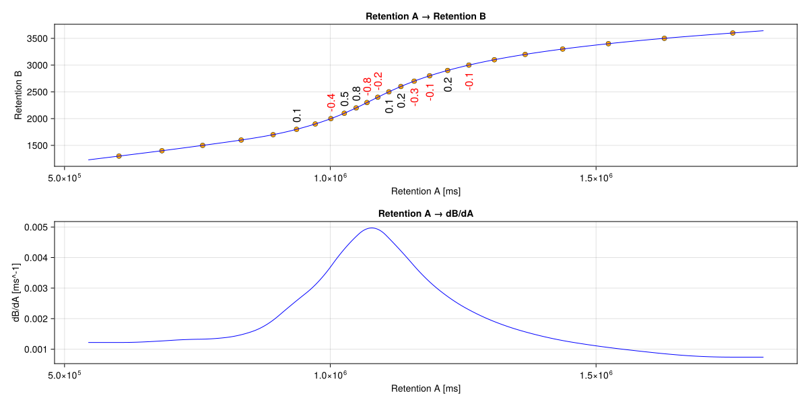
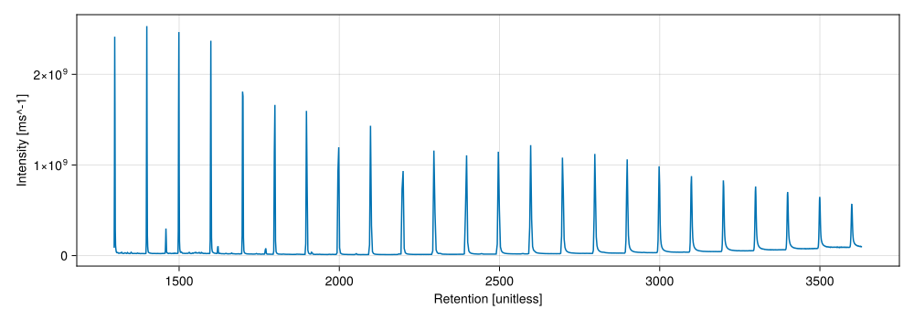
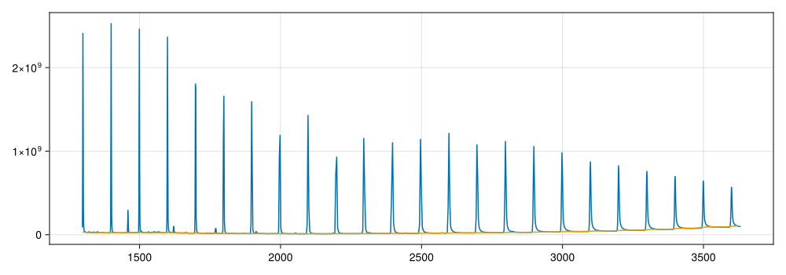
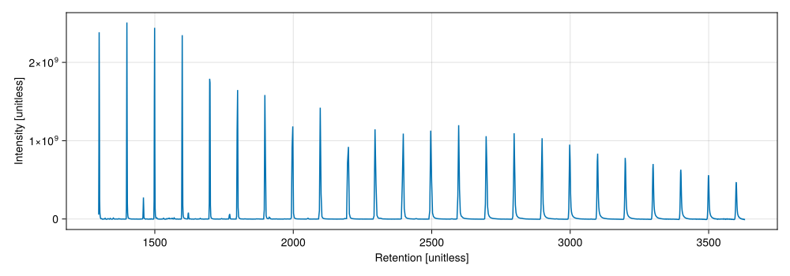

JuChrom.jl
JuChrom is a Julia package for loading, storing, and analyzing chromatographic data, with an emphasis on gas chromatography-mass spectrometry (GC-MS). The core API is pure Julia; some vendor-specific loaders are provided via optional extensions.
Installation
JuChrom is not yet registered in the General registry. Install it directly from GitHub:
julia> ]
pkg> add https://github.com/oniehuis/JuChrom.jlAfter the installation finishes, you can load it in the Julia REPL with:
julia> using JuChromCurrent capabilities
- Data structures for chromatographic scans, mass-spectral scans, scan series, mass-scan matrices, and variance-carrying matrices, including metadata. Retention times, intensities, and m/z values can carry Unitful.jl units.
- Loaders for proprietary vendor formats, including Agilent MassHunter GC-MS, Agilent ChemStation MS, Agilent FID, and Shimadzu GC-MS data.
- Conversions between representations, including extracted-ion and total-ion chromatograms from MS scan series or matrices and conversion to mass-scan matrices.
- Preprocessing transformations such as retention and index trimming, m/z binning, retention binning and gridding, scan-timing correction, dwell normalization, TIC normalization, censored-value replacement, centered log-ratio transformation, and whitening.
- Automatic identification of n-alkane series in standard ladder runs for retention-index calibration, including ladder-step detection, calibration-point selection, and extraction of ladder mass spectra.
- Variance estimation and modeling, including count-based variance estimates and linear GC-MS intensity variance models fitted from n-alkane standards.
- Retention mapping for fitting continuous forward and inverse maps between retention coordinates and retention indices, including derivatives and Jacobian-aware intensity transformation.
- Baseline estimation for chromatographic traces, such as individual ion traces or TICs.
- Spectral similarity tools for cosine similarity and distance, plus a dynamic-programming alignment routine for matching spectra based on similarity scores.
- Deconvolution tools for chromatographic peak-shape fitting and PARAFAC2 decomposition across samples.
- Optional Makie plotting methods for TIC traces, mass spectra, retention mappers, and annotated n-alkane ladders.
Quickstart
# Load JuChrom and the loader needed for the example Agilent ChemStation file.
using JuChrom
using JuChrom.ChemStationMSLoader
# Load a Makie backend so JuChrom's plotting recipes are available.
using CairoMakie
# Load an example n-alkane standard run.
file = joinpath(JuChrom.agilent, "C7-C40_ChemStationMS.D", "data.ms")
mss = load(ChemStationMS(file; mode=:ms))
# Plot the total ion chromatogram (TIC) to inspect the raw run.
fig_tic = tictrace(mss; figure=(; size=(1000, 359)))
save("tic.svg", fig_tic)
# Keep the retention window that contains the alkane ladder and discard the rest.
tmss = retentiontrim(mss; start=10u"minute", stop=30u"minute")
# Integer-bin m/z values so all scans share a common nominal-mass axis.
btmss = binmzvalues(tmss)
# Convert the scan series to a dense retention-by-m/z matrix for matrix workflows.
msm = mscanmatrix(btmss)
# Convert accumulated ion counts to dwell-normalized intensity rates.
nmsm = dwellnormalize(msm)
# Extract one diagnostic ion trace from the processed matrix.
xic = mzchrom(nmsm, 109, warning=false)
# Plot the m/z 109 chromatogram as a quick processing check.
fig_xic = tictrace(xic; figure=(; size=(1000, 359)))
save("xic.svg", fig_xic)
# Find the n-alkane ladder needed for retention-index calibration.
asr = findalkanes(nmsm)
asr.success || throw(ArgumentError(
"Failed to find a suitable ladder in standard file: $file"))
# Overlay the detected ladder steps on the TIC to check the annotation.
fig_ladder = tictrace(nmsm, asr)
save("ladder.svg", fig_ladder)
# Fit an intensity-variance model from the annotated alkane peaks.
avf = fitalkanevariancemodel(nmsm, asr)
avf.success || throw(ArgumentError(
"Failed to infer a variance model from standard file: $file"))
# Attach predicted variances to the processed intensity matrix.
vmsm = varpred(nmsm, avf)VarianceMassScanMatrix with 1690 scans
├─ Retention:
│ ├─ Range: 600255.0 to 1.799632e6 (ms)
│ └─ Type: Float32
├─ M/Z values:
│ ├─ Range: 29 to 563 (unitless)
│ ├─ Total data points: 535
│ └─ Type: Int64
├─ Intensity:
│ ├─ Range: 0.0 to 894290.9295774648 (ms^-1)
│ ├─ Type: Float64
│ └─ MS Level: 1
├─ Variance:
│ ├─ Range: 286.25033913770767 to 3.6280982156774276e6 (ms^-2)
│ └─ Type: Float64
└─ Annotations:
├─ Instrument:
│ ├─ type = MSD 5977B
│ ├─ inlet = unknown
│ └─ method = VM_STD_Auto_SPME.M
├─ Acquisition:
│ ├─ datetime = 19 Jun 24 05:06 pm
│ ├─ sequence = 0
│ ├─ vial = 23
│ └─ replicate = 0
├─ User: operator = unknown
└─ Sample:
├─ sample = C7-C40_vial4_dil4_June19_2024
└─ description = Alkanstandard vial 4 4x verdünnt
# Fit a smooth map from retention time to Kováts retention index.
mapper = fitmap(asr)
# Plot the mapper diagnostics to inspect fit quality and residuals.
fig_mapper = plot(mapper; size=(1200, 600))
save("mapper.svg", fig_mapper)
# Convert from retention time to retention index and propagate intensities and variances.
vmsm_ri = applymap(mapper, vmsm)
# Plot the mapped TIC to check the transformed retention axis.
fig_ri_tic = tictrace(vmsm_ri; figure=(; size=(1000, 350)))
save("ri_tic.svg", fig_ri_tic)
# Estimate a smooth baseline on the mapped data.
baseline = arpls(vmsm_ri)
# Overlay the mapped TIC and baseline to check the baseline fit.
fig_baseline = Figure(; size=(1000, 350))
ax_baseline = Axis(fig_baseline[1, 1])
lines!(ax_baseline, vmsm_ri)
lines!(ax_baseline, baseline)
save("baseline.svg", fig_baseline)
# Subtract the baseline so flat regions are centered near zero.
signal = subtractbaseline(vmsm_ri, baseline)
fig_signal = tictrace(signal; figure=(; size=(1000, 350)))
save("signal.svg", fig_signal)
Disclaimer
JuChrom is provided "as is," without warranty of any kind. Users are responsible for independently validating all outputs and interpretations and for determining suitability for their specific applications. The authors and contributors disclaim any liability for errors, omissions, or any consequences arising from use of the software, including use in regulated, clinical, or safety-critical contexts.